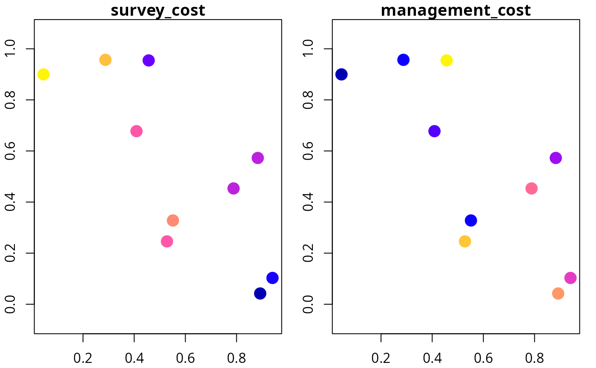
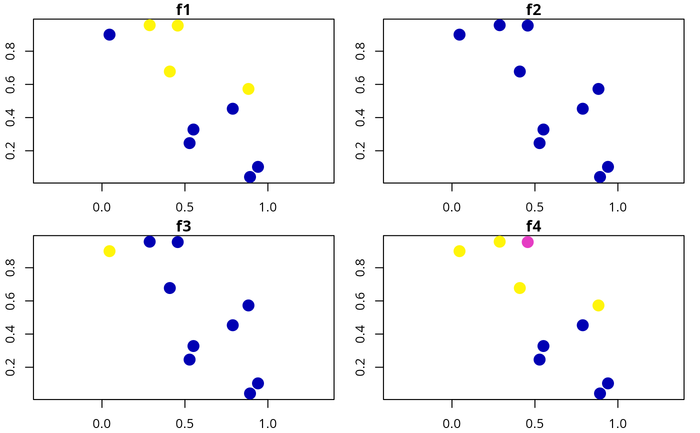
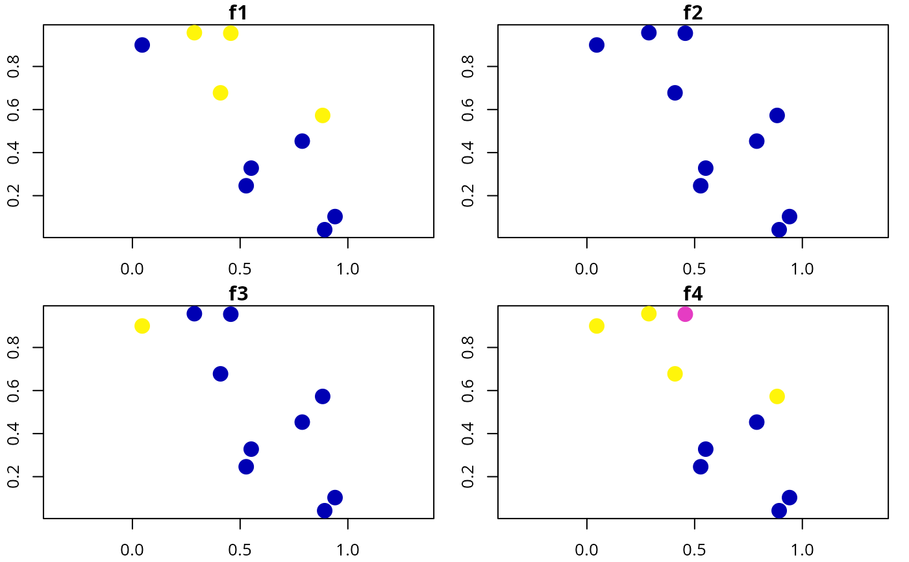
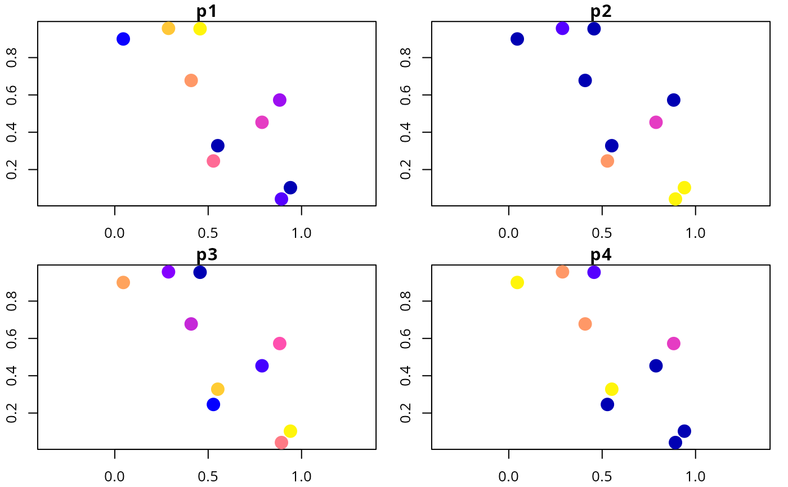
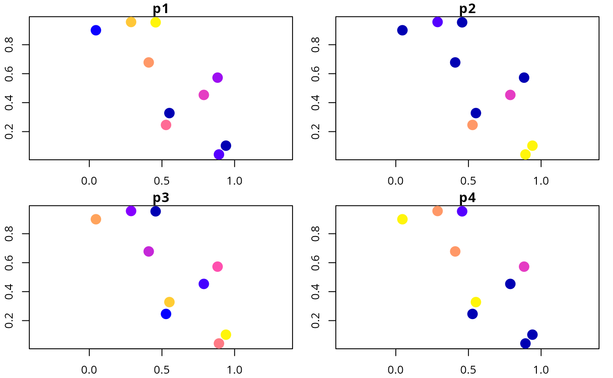

Simulate site data for developing simulated survey schemes.
Usage
simulate_site_data(
n_sites,
n_features,
proportion_of_sites_missing_data,
n_env_vars = 3,
survey_cost_intensity = 20,
survey_cost_scale = 5,
management_cost_intensity = 100,
management_cost_scale = 30,
max_number_surveys_per_site = 5,
output_probabilities = TRUE
)Arguments
- n_sites
integernumber of sites.- n_features
integernumber of features.- proportion_of_sites_missing_data
numericproportion of sites that do not have existing presence/absence data. Values must be between zero and one.- n_env_vars
integernumber of environmental variables for simulating feature distributions. Defaults to 3.- survey_cost_intensity
numericintensity of the costs of surveying sites. Larger values correspond to larger costs on average. Defaults to 20.- survey_cost_scale
numericvalue corresponding to the spatial homogeneity of the survey costs. Defaults to 5.- management_cost_intensity
numericintensity of the costs of average cost of managing sites for conservation. Defaults to 100.- management_cost_scale
numericvalue corresponding to the spatial homogeneity of the survey costs. Defaults to 30.- max_number_surveys_per_site
integermaximum number of surveys per site in the simulated data. Defaults to 5.- output_probabilities
logicalvalue indicating if probability values of occupancy should be output or not. Defaults toTRUE.
Value
A sf::sf() object with site data.
The "management_cost" column contains the site protection costs,
and the "survey_cost" column contains the costs for surveying
each site.
Additionally, columns that start with
(i) "f" (e.g. "f1") contain the proportion of
times that each feature was detected in each site,
(ii) "n" (e.g. "n1") contain the number of
of surveys for each feature within each site,
(iii) "p" (e.g. "p1") contain prior
probability data, and
(iv) "e" (e.g. "e1") contain environmental
data. Note that columns that contain the same integer value (excepting
environmental data columns) correspond to the same feature
(e.g. "d1", "n1", "p1" contain data that correspond
to the same feature).
Examples
# set seed for reproducibility
set.seed(123)
# simulate data
d <- simulate_site_data(n_sites = 10, n_features = 4, prop = 0.5)
# print data
print(d, width = Inf)
#> Simple feature collection with 10 features and 17 fields
#> Geometry type: POINT
#> Dimension: XY
#> Bounding box: xmin: 0.0455565 ymin: 0.04205953 xmax: 0.9404673 ymax: 0.9568333
#> CRS: NA
#> # A tibble: 10 × 18
#> survey_cost management_cost f1 f2 f3 f4 n1 n2 n3 n4
#> <dbl> <dbl> <dbl> <dbl> <dbl> <dbl> <dbl> <dbl> <dbl> <dbl>
#> 1 26 68 1 0 0 1 3 3 3 3
#> 2 22 93 0 0 0 0 0 0 0 0
#> 3 23 69 1 0 0 1 1 1 1 1
#> 4 22 78 1 0 0 1 3 3 3 3
#> 5 18 81 0 0 0 0 0 0 0 0
#> 6 30 49 0 0 1 1 2 2 2 2
#> 7 23 125 0 0 0 0 0 0 0 0
#> 8 11 103 0 0 0 0 0 0 0 0
#> 9 25 68 0 0 0 0 0 0 0 0
#> 10 21 137 1 0 0 0.4 5 5 5 5
#> e1 e2 e3 p1 p2 p3 p4 geometry
#> <dbl> <dbl> <dbl> <dbl> <dbl> <dbl> <dbl> <POINT>
#> 1 -0.145 -0.995 -0.223 0.998 0.004 0.091 0.993 (0.2875775 0.9568333)
#> 2 0.884 0.0440 0.0843 0.949 0.113 0.074 0 (0.7883051 0.4533342)
#> 3 0.794 -0.627 -0.637 0.957 0 0.134 0.993 (0.4089769 0.6775706)
#> 4 0.297 -0.540 -0.402 0.929 0 0.24 0.992 (0.8830174 0.5726334)
#> 5 -1.45 1.65 1.21 0 1 0.994 0 (0.9404673 0.1029247)
#> 6 -1.45 -1.13 -1.22 0.024 0 0.99 1 (0.0455565 0.899825)
#> 7 0.878 0.222 0.312 0.956 0.894 0.059 0 (0.5281055 0.2460877)
#> 8 -1.23 1.42 2.08 0.35 1 0.555 0 (0.892419 0.04205953)
#> 9 0.731 0.761 -0.990 0 0 0.991 1 (0.551435 0.3279207)
#> 10 0.685 -0.814 -0.211 0.999 0 0.02 0.117 (0.4566147 0.9545036)
# plot cost data
plot(d[, c("survey_cost", "management_cost")], axes = TRUE, pch = 16,
cex = 2)

# plot environmental data
plot(d[, c("e1", "e2", "e3")], axes = TRUE, pch = 16, cex = 2)
 # plot feature detection data
plot(d[, c("f1", "f2", "f3", "f4")], axes = TRUE, pch = 16, cex = 2)

# plot feature survey effort
plot(d[, c("n1", "n2", "n3", "n4")], axes = TRUE, pch = 16, cex = 2)
# plot feature detection data
plot(d[, c("f1", "f2", "f3", "f4")], axes = TRUE, pch = 16, cex = 2)

# plot feature survey effort
plot(d[, c("n1", "n2", "n3", "n4")], axes = TRUE, pch = 16, cex = 2)
 # plot feature prior probability data
plot(d[, c("p1", "p2", "p3", "p4")], axes = TRUE, pch = 16, cex = 2)

# plot feature prior probability data
plot(d[, c("p1", "p2", "p3", "p4")], axes = TRUE, pch = 16, cex = 2)
